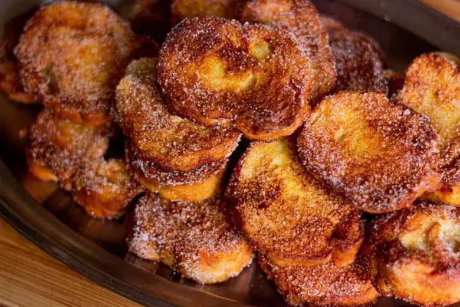

Ótimo para ser servido como prato principal, umas das receitas mais tradicionais e típicas de serem feitas nessa época do ano! Rabanada  As receitas estarão na segunda página Perfeito para ser servido como sobremesa. A rabanada é uma das receitas mais tradicionais para serem feitas no natal!